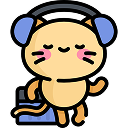
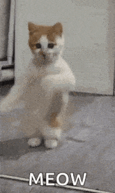
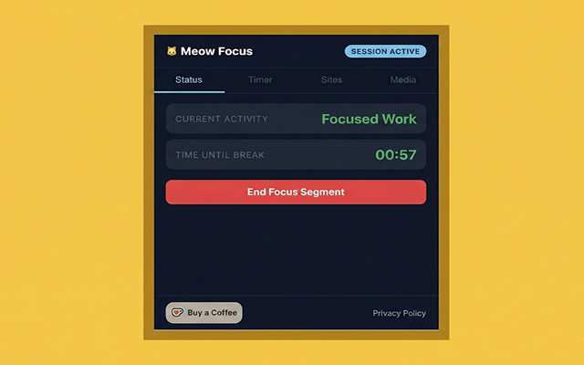
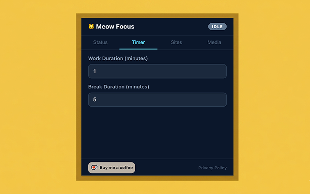
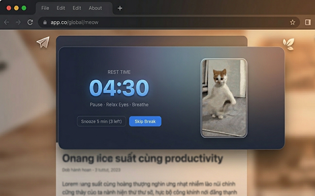

Meow Focus reminds you to take healthy breaks with a cute fullscreen cat overlay — configurable, offline, and privacy-first.
Features
Simple, configurable, and 100% offline. No account needed.
Configurable work and break durations. Persists across page reloads and browser restarts using timestamp-based calculations.
A fullscreen cat overlay appears when it's time to rest. Gentle, non-intrusive, and always dismissable with Skip or Snooze.
Only track time on selected websites like GitHub, Notion, or Figma. Every other site is completely ignored.
Upload your own GIF, MP4, PNG, or WebP to display during breaks. Your break, your vibe.
How it works
Open the extension popup and add the websites where you work — github.com, notion.so, figma.com, etc.
Choose your work duration (default 25 min) and break duration (default 5 min). Classic Pomodoro, but cuter.
Hit "Start Working" and focus. When time's up, a cat will remind you it's break time — whether you like it or not.

Privacy
Meow Focus runs entirely in your browser. No servers, no tracking, no surprises.
Screenshots
Clean, minimal popup. Fullscreen break overlay with your cat companion.

Extension Popup

Timer Settings

Break Overlay
Q&A